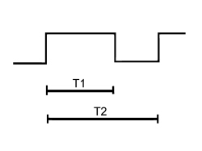

5040DD POLLUTION SENSOR SIGNAL CHECK
- Path
- Test > 50 AUXILIARY UNITS > 5040 AIR CONDITIONING CASING AND COMPONENTS > 5040D AIR CONDITIONING CONTROLS > 5040DD POLLUTION SENSOR SIGNAL CHECK
- Kind
- test / check procedure
- Applies to
- all engines; all production periods
- Interactive page
- https://sloeber94.github.io/elrnDB-fCrm/en/#/194002538
Applies to: all engines; all production periods; only with equipment: AUTOMATIC AIR CONDITIONING
Using the Examiner in the voltmeter function, select an end of scale of 20 Volt and basic time of 200 milliseconds. Connect the Examiner black probe to the vehicle earth and the red probe to pin 3 of the air quality sensor output signal.
See K064 EXHAUST GAS PRESENCE SENSOR
Turn the key to the ON position.
Wait about 36 secs for the sensor to warm up.
Spray the gas in the canister (part no. 71715571) in less than 60 seconds. Press the START button.
The signal shown should be a set of PWM impulses with a frequency of 100 Hz and a Duty Cycle that varies between 15 and 70% as indicated in the table below.

PWM% Duty Cycle = T1 / T2 where:
- T1= duration of impulse
- T2 = 1/f = 1/100 Hz = Duratation of transmission
Pin out:
- 1. +CH/15
- 2. earth
- 3. output signal
PWM signal meaning
5% short circuit to earth of signal line
15% non polluted air circulation
30% level 1 pollution
50% level 2 pollution
70% level 3 pollution
>90% short circuit +12 signal line